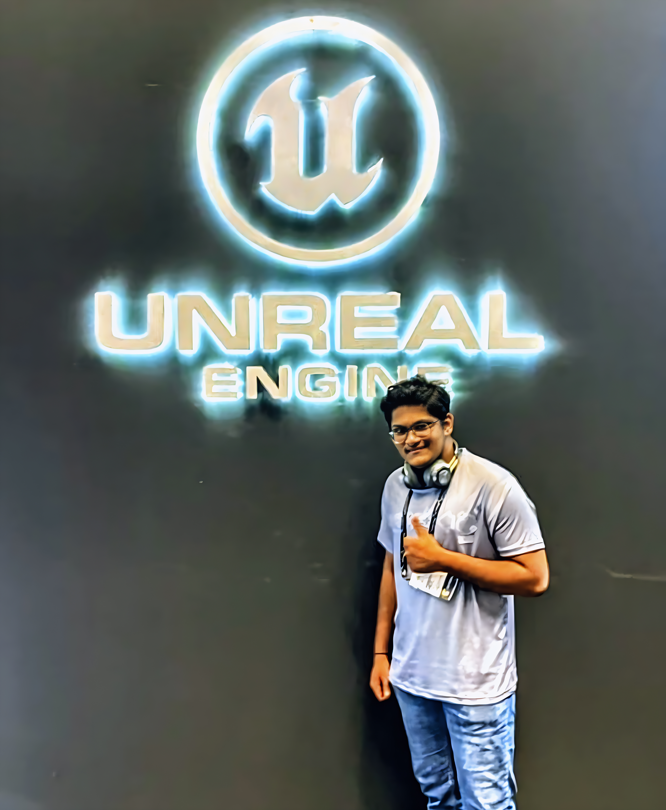

Game Designer • Level Designer • Environment Designer
Game, Level & Environment Designer crafting unsettling psychological experiences in Unity.
Specialized in immersive level design, atmospheric environments, narrative-driven gameplay, and visual scripting. Every project is 100% built and developed in Unity 3D.
Currently open to full-time, contract, or freelance opportunities.

Solo-developed psychological horror. You wake up trapped in an abandoned house with something watching.
Intense psychological chase horror experience.
Sleep-paralysis inspired horror experience.
My Roles: Level Designer, Environment Designer
Team: Vinil (Game Designer & Programmer)
Solo PSX-style horror series — Episode 1
Cursed diner horror with Vinil
Abandoned hospital psychological terror
Minimalist tension experience
Always looking for new nightmares to build.
Download Resume (PDF)